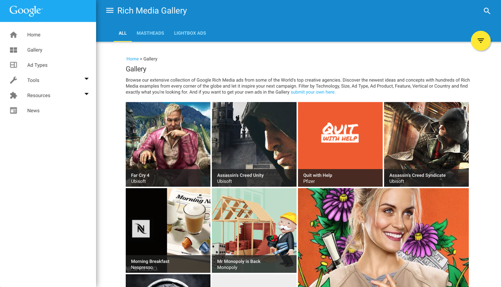

Contents
Where should I use Material Design Lite (MDL)?
If you’re interested in a Material Design experience using vanilla Web technologies like CSS, JavaScript and HTML, MDL might be a useful option to consider. We optimise for websites heavy on content, such as marketing pages, articles, blogs and general web content that isn’t particularly app-y. If you just want to pick some colors, customise a template and ship a Material experience, we try to help make that process simpler.
Whilst there exist several community-driven options for Material Design, our experience has shown that there are several gaps in the Material specification when it comes to the web. Rather than guessing how these gaps should be filled (something we know the community has struggled with), we’ve opted for a close collaboration with the Material Design team to provide a Material library that is both spec compatible for today and provides guidance on aspects of the spec still being evolved.
What CSS naming conventions does MDL use?
MDL was written using BEM. BEM stands for Block, Element, Modifier. It is a method used to construct CSS class-names so they are consistent, isolated, and expressive. A few good resources for learning more about BEM methods are:
These are great resources that simplify the data needed to understand BEM. If you want to read the methodology from the inventors, Yandex provides the resource. This reference goes way beyond just the CSS and into the full JavaScript setup they use as well.
Our wiki includes a section on the namespacing used for MDL specifically.
Does MDL support progressive enhancement?
MDL’s components were designed from the ground up with progressive enhancement in mind. We attempt to build on native HTML elements as much as possible, relying on JavaScript where absolutely necessary for ‘enhancements’.
One example of this is our ‘Text only’ Material Design template. Switching JavaScript off in Chrome DevTools, the page still renders CSS fine:

This allows us to render important content first and then ‘enhance’ the page with things like Material Design button ripples and pop-out menu components.
MDL will degrade to a no-JavaScript experience on IE9, though you can pull in polyfills for an enhanced experience. If components require JavaScript to function, such as Layout, these will otherwise need to be planned for in development. IE10+ and evergreen browsers are fully supported. For more details on our browser support, see ‘Which browsers does MDL support?’.
Note: the MDL site itself attempts to use progressive enhancement where possible. We do however have aspects of the site (e.g our component page) that rely more heavily on JS. The MDL Templates and Components otherwise try to render as well as they can with JS off.
Which browsers does MDL support?
The complete MDL experience should work in the last two versions of all evergreen browsers, whilst we gracefully degrade to CSS-only in browsers like IE9 that don’t pass our Cutting-the-mustard test.
Our browser compatibility matrix has the most up to date information on the browsers we officially support. For components, at minimum we require support for querySelector, classList and addEventListener, which can be polyfilled as needed. Our Templates will work in IE10+, primarily due to our use of Flexbox.
The polyfills that we’re currently using for the MDL site to improve support in oldIE are the following:
<!--[if IE]>
<script src="//cdnjs.cloudflare.com/ajax/libs/es5-shim/4.1.7/es5-shim.min.js"></script>
<script src="//cdnjs.cloudflare.com/ajax/libs/classlist/2014.01.31/classList.min.js"></script>
<script src="//cdnjs.cloudflare.com/ajax/libs/selectivizr/1.0.2/selectivizr-min.js"></script>
<![endif]-->
IE10 standards mode removes support for conditional comments, so the above will only get interpreted by older versions of IE, such as IE9.
We do not officially support IE8. That said, some components will degrade using the CSS-only (or native HTML element) experience there better than others. For example:
Buttons

Tables

Sliders (degrade to input fields)

Does MDL play nicely with Polymer? Is it a replacement for the Paper elements?
MDL focuses on delivering an experience that is optimised for static content sites, like blogs, marketing pages and more traditional text-based web pages.
The Paper elements built with Polymer are fully encapsulated components that can be used individually or composed together to create a material design-style site, and support more advanced user interaction.
That said, MDL can be used alongside the Polymer element counterparts. Polymer uses the power of Web Components to encapsulate the designs used for those components. MDL does not affect the styling within custom components.
Is MDL comparable to Twitter Bootstrap?
If we're using it instead of Bootstrap, can we expect the same level of component styling?
Material Design can replace many parts of Bootstrap. However, it does not intend to feature-match everything Bootstrap offers. Instead MDL intends to implement the components specified by the Material Design specification. This allows it to provide the most comprehensive and accurate solution available.
How does it compare to existing Material CSS implementations?
Materialize, Material Bootstrap, etc
We think the community does a great job offering their own take on how Material Design should be implemented for CSS libraries.
That said, the large, diverse number of implementations available are often quite liberal with their interpretation of the spec (not their fault!) and their opinions don’t always reflect what the Material Design team would consider ‘correct’. MDL was developed in close collaboration with the Material Design and Chrome UX teams and undergoes regular reviews for spec compliance. When we run into an area of the spec that isn’t yet fully fleshed out, MDL is able to offer reviewed opinions on how these should be solved in a way that tries to stay true to Material Design.
Should I use the minified, CDN or Sass versions of MDL?
Should I build my own version or download the minified version or simply refer to CDN objects?
Minified: If it’s your first time using MDL, we recommend downloading one of the default packages from the ‘Getting Started’ page that include a minified version of our CSS/JS and optionally our pre-made Templates.
CDN: If you’re just prototyping or want to avoid hosting your own copy of the MDL CSS and JS files, you can use our CDN to pull down a heavily edge-cached version.
Customiser: If you’re creating a new site with MDL and are using a custom color scheme, we recommend downloading the default package then generating a custom build using the Customiser tool. You can use this to override the material.min.css file for your own needs.
Sass: If you would prefer to go all in, you can get the Sass version of MDL, which includes our original sources, docs and templates. This version allows maximum customisation using CSS variables and the rest of the Sass goodness you’re used to.
What service does the official CDN use?
The official CDN is hosted using Google Cloud Storage.
How does MDL relate to Web Starter Kit?
MDL is an evolutionary step from the styleguide provided in Web Starter Kit. The more Web Starter Kit was used, the more it became clear that many developers simply wanted Material Design in their sites.
The WSK Styleguide also did not align to Material Design fully, it was simply based on the idea. From the WSK project, MDL was born to try and fill this need for developers. In the process making the implementation as faithful as possible to the specification.
Do any Google properties use MDL in production?
MDL is used in production by a few different Google properties. These use an older, incomplete version but demonstrate what deployed experiences can look like. Examples include:
The Google Services site:

RichMediaGallery by DoubleClick:

and is being used by many other teams on upcoming projects, including Google Shopping.
Can I build or use individual MDL components (e.g a button)?
For V1 of MDL we are focused on the use-case of folks who are likely to need a few different components on their page and will want to include most of the MDL library. This means that support and docs around just plucking single components on their own is minimal.
That said, if you need to generate a build using just a single (or smaller number of) components, you will need to use Gulp with our Sass build. You can comment out those components you don’t need in material-design-lite.scss, comment out the scripts you don’t need in the Gulpfile and then run gulp to create your build.
We have talked about offering up components in a more modular fashion but will be exploring this in the post V1 timeline.
How do I report an issue with MDL?
Please let us know about any problems by opening an issue on our GitHub repo.
Where can I get help with questions about using MDL?
We encourage the MDL user and developer community to ask questions, and help answer questions, on Stack Overflow, using the Material-Design-Lite tag.
Are there any presentations or slide-decks available on MDL?
We did a preview talk at Google I/O 2015 on MDL and the slides for that talk can be found on SpeakerDeck.
Can I request or contribute components to MDL?
Sure! There may be components or templates you would like to see implemented in MDL that we don't yet provide. Please feel free to propose them on the Component Requests thread. While we can't guarantee we'll be able to implement them all, we will consider requests and review them at regular intervals.